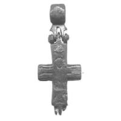
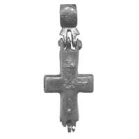

Catalog › CE-0503 · PES2020-F1-3
Encolpion bivalv, Veliki Novgorod, рис. 1, 3
mijlocul sec. XII – începutul sec. XIII (1134–1233) · Veliki Novgorod, săpătura Desiatinîi 1 (Дес-1/3-139), Rusia
double-sided reliquary cross (enkolpion); mijlocul c. XII – începutul sec. XIII (1134–1233); found at Veliki Novgorod, săpătura Desiatinîi 1 (Дес-1/3-139), Rusia.




Identificare
- Categorie
- Encolpion bivalv (relicvar)
- Tehnică
- Gravare (incizie); Niello
Iconografie
- Avers
- Răstignirea (Hristos cu perizoma)
- Descriere avers
- Răstignirea (grupa IV.6.2).
- Descriere revers
- Cruce în loc de Maica Domnului (grupa IV.6.2: encolpion combinat).
Datare și atribuire
- Datare
- mijlocul sec. XII – începutul sec. XIII (1134–1233)
- Tipologie
- Korzuhina–Peskova 2003, grupa IV.6.2 (combinat: Răstignire și cruce)
Descoperire
- Localitate
- Veliki Novgorod, săpătura Desiatinîi 1 (Дес-1/3-139)
- Țară
- Rusia
- Context
- Așezare
- Anul
- 2008
- Coordonate
- 58.5610° N, 31.2809° E
- Precizia locului
- Doar localitatea
Păstrare și referințe
- Bibliografie
- А. А. Пескова, Древнейшие древнерусские нагрудные кресты-реликварии в свете новых исследований, în „Археологические вести”, 27, 2020, p. 175–193 [Пескова 2020], рис. 1, 3 (p. 178, legenda p. 179), text p. 181. DOI 10.31600/1817-6976-2020-27-175-193. Publicată la: Олейников 2019, p. 164, рис. 2, 3.
- Figura
- рис. 1, 3
- Planșe
- Пескова 2020, p. 178
- Observații
- Provine din straturi amestecate de la mijlocul sec. XII – începutul sec. XIII (datare după contextul arheologic). Datare: după contextul arheologic dat de autor. Coordonate: ale localității (aproximative), nu date în sursă.
Citare: Corpus Encolpiorum, CE-0503, Encolpion bivalv, Veliki Novgorod, рис. 1, 3, https://vitaliejosanu1979-ux.github.io/primul-meu-proiect/piese/PES2020-F1-3/ (accesat 2026-10-17).